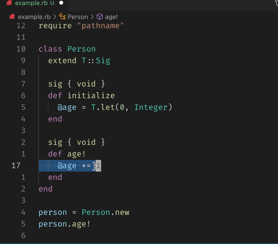

class RubyLsp::Requests::SelectionRanges

The selection ranges request informs the editor of ranges that the user may want to select based on the location(s) of their cursor(s).
Trigger this request with: Ctrl + Shift + -> or Ctrl + Shift + <-
Note that if using VSCode Neovim, you will need to be in Insert mode for this to work correctly.
Example¶ ↑
def foo # --> The next selection range encompasses the entire method definition. puts "Hello, world!" # --> Cursor is on this line end
Public Class Methods
new(document)
click to toggle source
# File lib/ruby_lsp/requests/selection_ranges.rb, line 27 def initialize(document) @document = document @ranges = T.let([], T::Array[Support::SelectionRange]) @stack = T.let([], T::Array[Support::SelectionRange]) end
Public Instance Methods
run()
click to toggle source
# File lib/ruby_lsp/requests/selection_ranges.rb, line 34 def run # [node, parent] queue = [[@document.tree, nil]] until queue.empty? node, parent = queue.shift next unless node range = Support::SelectionRange.new(range: range_from_location(node.location), parent: parent) T.unsafe(queue).unshift(*node.child_nodes.map { |child| [child, range] }) @ranges.unshift(range) end @ranges end